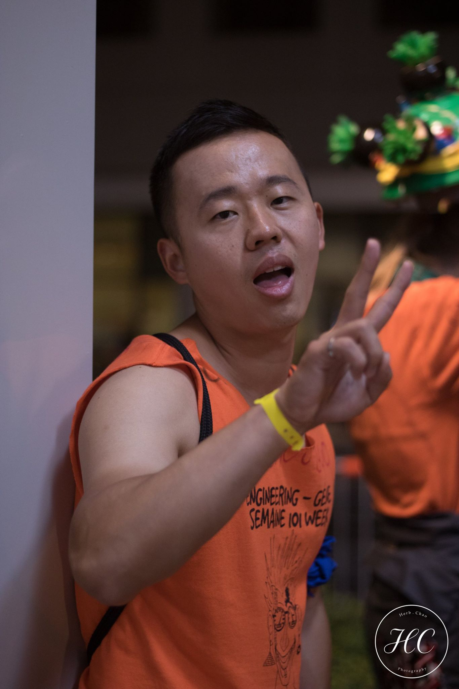

Welcome to Maxwell's Webpage 😄
Maxwell Jianzhou Wang

Research:
Research Interests: Machine Learning, Computer Vision, Multi-Object Tracking
1. Online Multi-face Detection and Tracking via Feature Association Metrics
(Thesis Project) Nov.2018-Mar.2020
Multi-face Detection based on MTCNN and common Object detectors
Multi-face Tracking using my modified matching cascade association based on Deep SORT
Multi-face Re-ID using 4 different feature classifiers
[Deep Learning][Tensorflow][Python][Faster R-CNN][SSD][R-FCN][MTCNN][ResNets][Feature Loss]
https://github.com/Maxwell2016LeChouchou/cosine_metric_multi_face_tracking
2. Evaluation of 4 feature classifiers for faces (Nov.2019-Jan.2020)
Shallow/middle depth CNN/ResNet models to train feature classifiers to assistant my thesis project
[Deep Learning][Tensorflow][Python][Softmax Classifier][Angular Classifier][Triplet Loss][Magnet Loss]
https://github.com/Maxwell2016LeChouchou/training_feature_descriptor
3. Multi-Face Tracking: Detectors COmparison with a Traditional Tracker (Sep.2019-Nov.2019)
Detectors: 5 combination of popular detectors: SSD, Faster R-CNN and R-FCN
Tracker: Kalman Filter for Prediction, Hungarian Algorithm for Optimizing Distance (Data Association)
[Deep Learning][Tensorflow][Python][MATLAB]
https://github.com/Maxwell2016LeChouchou/multi_face_detection_et_tracking
4. Convolutional Pose Estimation (Jul.2018 - Oct.2018)
Multi-joint pose estimation shown pose heatmap and occlusion heatmap
Using GAN to improve pose estimation by modeling pose discriminator
[Deep Learning][PyTorch][GAN][Python]
5. Multi-Face Detection and Tracking via MTCNN and Cosine Similarity (Jun.2018-Oct.2018)
Face Detection using Multi-Task Cascaded Convolutional Neural Networks (MTCNN)
Face Tracking based on Cosine Similarity
[Deep Learning][Tensorflow][Python][MATLAB][MTCNN]
6. Online Visual Object Recognition and Tracking Systems (Feb.2018-Apr.2018)
Visual Object Recognition: Feature Learning Algorithm, CACTus + SEF + SLFN
Correlation Filter-Construction Process: MOSSE Algorithm
[Feature Learning][Shape Estimation][MATLAB]
7. Age Classification (Jan.2018-Mar.2018)
Age classification methods comparison between CNN and Active Appearance Models (AMM)
[Machine Learning][PyTorch][Python][MATLAB][CNN]
8. Natural Language Processing using Modeling Multi-Relational Data (Nov.2017-Dec.2017)
Link Prediction based on Learning entity and Relation Embedding for Knowledge Graph
Match Entities and Relation Extraction from text
Data Mapping for Relational Basis
[Machine Learning][Python][transSpare][transE][transR][DistMult][Python]
9. Solution of Persepctive n Points (PnP) problems for camera view (Oct.2017-Dec.2017)
Real-time PnP based on Binary Pattern Recognition and Video Based PnP Accuracy
Comparison among EPnP, DLS and our PnP
[OpenCV][SLAM][C++]
Working Experience (Internship or Part-Time in University)
University of Ottawa VIVA Lab (Ottawa, Canada, Sep.2017-Jun.2019)
Research Assistant
Research interesed in Deep Learning, Computer Vision, Multi-Object Detection and Tracking
Thesis: Evaluation of Face Detectors and Feature Association Metrics for Real-time Multi-Face Tracking
Faculty of Engineering of the University of Ottawa (Ottawa, Canada)
Teaching Assistant/Lab Demonstrator
ELG 3336 --- Electronics for Mechanical Engineering
Sep.2019-Dec.2019 & Sep.2018-Dec.2018
ELG 2336 --- Electric Circuits and Machines for Mechanical Engineering
Jan.2019-Apr.2019
GNG 1106 --- Fundamentals of Engineering Computation C Language
Jan.2018-Apr.2018
ELG 3125 --- Signal and Systems
Sep.2017-Dec.2017
DAAD RISE Program, Institute of Electronic Device and Circuit, University of Ulm (Ulm, Germany, May 2015-Aug.2015)
Research Assistant, Ciruit Desginer
Research Project: Biasing Strategy for 30GHz Power Amplifiers
Control of the temperature dependence of current gain on HBJT and high frequency MIMO power amplifiers
Design and simulate a band-gap circuit with a start-up circuit, and optmize output on Smith Chart via ADS
University of Ottawa Quantum Photonics Research Group (Ottawa, Canada, Jul.2014-Dec.2014)
Undergraduate Researcher
Research Project: Experimental Demonstration of the Nonlinear Optical Performance of Integrated Optical Waveguides based on III-V Semiconductors
Analysis of simulation on fiber optics, coefficients of AlGaAs (Aluminium Gallium Arsenide)
Experimental demonstration of the nonlinear waveguides
Maxwell's Education
M.A.Sc in Electrical and Computer Engineering
Courses and Research Area: Machine Learning and Computer Vision
Supervisor: Professor Jochen Lang: https://www.site.uottawa.ca/~jlang/
2017 July --- 2020 July (Completed with Research Thesis)
M.A.Sc in Electrical and Computer Engineering (University of Ottawa)
Courses and Research Area: Optics and Photonics Systems
Supervisor: Professor Ksenia Dolgaleva:
http://www.quantumphotonics.ca/quantumphotonicslegacy/jianzhou-wang-en/
2016 September --- 2017 June (Incomplete)
B.A.Sc in Electrical Engineering (University of Ottawa)
Specialization: Microwave and Photonics
2012 September --- 2016 May (Completed with Cum Laude)
Key Skills and Competencies
Artificial Intelligence
Deep/Machine Learning, Object Detection/Tracking, Machine Vision, SLAM, TOF, Scikit, OpenCV, OpenGL, Keras, Tensorflow, PyTorch, Caffe
Computer Science and Programming
Python, C, C++, HTML, CSS, Java, JavaScript, PHP, Django, MySQL, Hadoop, Tableau, MATLAB, React JS, Node JS, Angular JS, Linux, Git,
Data Science
Numpy, Pandas, Data Mining, Data Optimization, Graphical Modeling
Awards
1. Germany DAAD RISE Scholar (Deutscher Akademischer Austausch Dienst Research Internships in
Science and Engineering Program)
2. University of Ottawa UROP Scholar (Undergraduate Research Opportunity Program)
3. The Winner of 2016 Winter University of Ottawa EPSC (Engineering Probability and Statistics
Competition)
4. The Finalist of 2016 Summer University of Ottawa EPSC
If you have any questions or any interests about his work or requst to use his
research code and benchmark, feel free to send him an email jwang212@uottawa.ca
If you are interested in my work and request for my research code and benchmark, please submit the form below, and I will send what you need